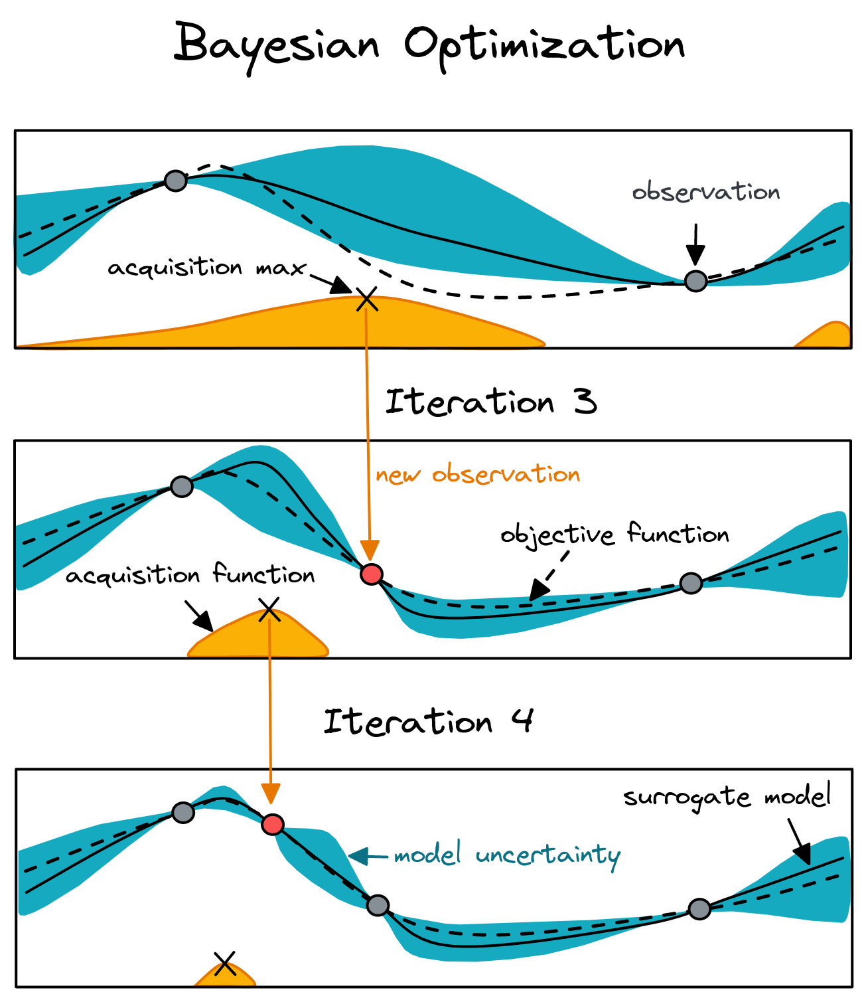

Automatic
Hyperparameter Tuning
Motivation
- Fair comparison with baselines 1,2
- Automatic tuning (no more grad student descent!)
- Improve performance/training time
1
Reproducible, Reusable, and Robust Reinforcement Learning
2
On the State of the Art of Evaluation in Neural Language Models
Outline
- Hyperparameter Optimization: "n vs B/n" tradeoff
- Samplers
- Schedulers
- In Practice (Optuna)
"n vs B/n" tradeoff
n: number of configurations
B / n: budget per configuration
B / n: budget per configuration
Main components: sampler (search algo) and pruner (scheduler)
Samplers

Grid Search?
Grid Search vs Random Search
1
Random Search for Hyper-Parameter Optimization
2
Algorithms for Hyper-Parameter Optimization
Bayesian Optimization
- Gaussian Process (GP)
- Tree of Parzen Estimators (TPE)

Black box optimization
- Evolution Strategies (ES, CMA-ES)
- Particle Swarm Optimization (PSO)
Questions?
Schedulers
Median Pruner
Used in Google Vizier
Prune if the trial’s best intermediate result is worse than median of intermediate results of previous trials at the same step.
Successive Halving
- Parameters: min resource and reduction factor
- More advanced: Hyperband
Questions?
In Practice (Optuna)
- Clean API (define-by-run)
- Good documentation
- Many features (samplers, pruners, multi objective, dashboard)
- Integration with many libraries
HP Tuning Steps
- Define the search space
- Define the objective function
- Choose sampler and pruner
- Get a coffee/Take a nap
Note: Automatic hyperparameter tuning is included in the RL Zoo
Search Space
import optuna
def sample_ppo_params(trial: optuna.Trial) -> Dict[str, Any]:
"""Sampler for PPO hyperparameters."""
# Sample from a list of choices (discrete)
activation_fn = trial.suggest_categorical("activation_fn", ["tanh", "relu"])
# Sample an integer in [low, high]
n_steps = trial.suggest_int("n_steps", 64, 2048)
# Sample a float in [low, high)
# (using log uniform distribution)
learning_rate = trial.suggest_float("lr", 1e-5, 1, log=True)
return {
"activation_fn": activation_fn,
"n_steps": n_steps,
"learning_rate": learning_rate,
}
RL Objective Function (1/2)
from stable_baselines3.common.callbacks import BaseCallback
class TrialEvalCallback(BaseCallback):
"""Callback used for evaluating and reporting a trial."""
def _on_step(self) -> bool:
if self.eval_freq > 0 and self.n_calls % self.eval_freq == 0:
# Evaluate the current policy
mean_reward, _ = evaluate_policy(self.model, self.eval_env)
self.eval_idx += 1
# Send report to Optuna
self.trial.report(mean_reward, self.eval_idx)
# Prune trial if needed
if self.trial.should_prune():
self.is_pruned = True
return False
return True
RL Objective Function (2/2)
def objective(trial: optuna.Trial) -> float:
...
# Sample hyperparameters
DEFAULT_HYPERPARAMS.update(sample_ppo_params(trial))
# Create the RL model
model = PPO(**kwargs)
# Create the callback that will periodically evaluate
# and report the performance
eval_callback = TrialEvalCallback(
eval_env,
trial,
N_EVAL_EPISODES,
EVAL_FREQ,
deterministic=True,
)
model.learn(N_TIMESTEPS, callback=eval_callback)
if eval_callback.is_pruned:
raise optuna.exceptions.TrialPruned()
return eval_callback.last_mean_reward
Choose Sampler, Pruner and launch the study!
from optuna.pruners import MedianPruner
from optuna.samplers import TPESampler, RandomSampler
# Select the sampler, can be random, TPESampler, CMAES, ...
sampler = TPESampler(n_startup_trials=5)
# Do not prune before 1/3 of the max budget is used
pruner = MedianPruner(n_startup_trials=5, n_warmup_steps=N_EVALUATIONS // 3)
# Create the study and start the hyperparameter optimization
study = optuna.create_study(sampler=sampler, pruner=pruner, direction="maximize")
# This script can be launch in parallel when using a database
study.optimize(objective, n_trials=N_TRIALS, timeout=TIMEOUT)
# Best result
best_trial = study.best_trial
# Pandas dataframe with all the results
study.trials_dataframe().to_csv("study_results_ppo.csv")
# Plot utils
plot_optimization_history(study)
Common Pitfalls
- HP optimization not needed (train longer first)
- Noisy evaluation: multiple eval
- Search space too small/wide
- Slow optimization: smaller budget
- Training not stable: manual tweaks
Questions?
Recap
- Use automatic tuning when possible/needed
- Automatic tuning = sampler + pruner + objective function
- Do not use grid search
- Common pitfalls
What's next?
Practical session with Colab notebook